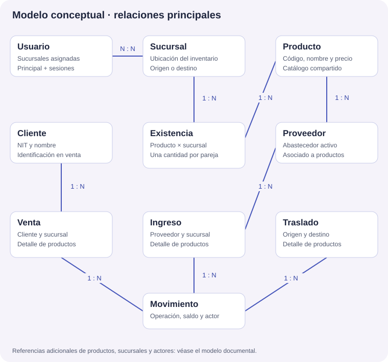
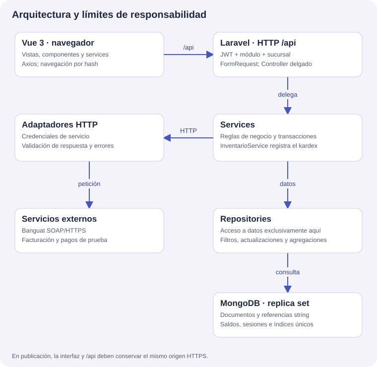
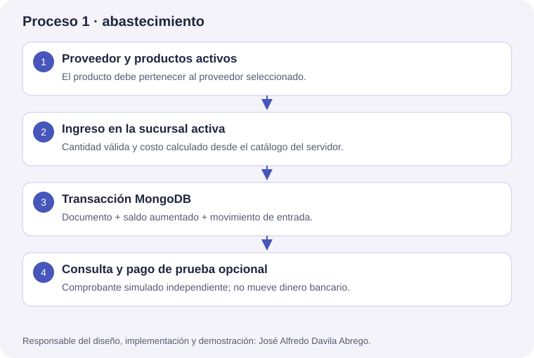
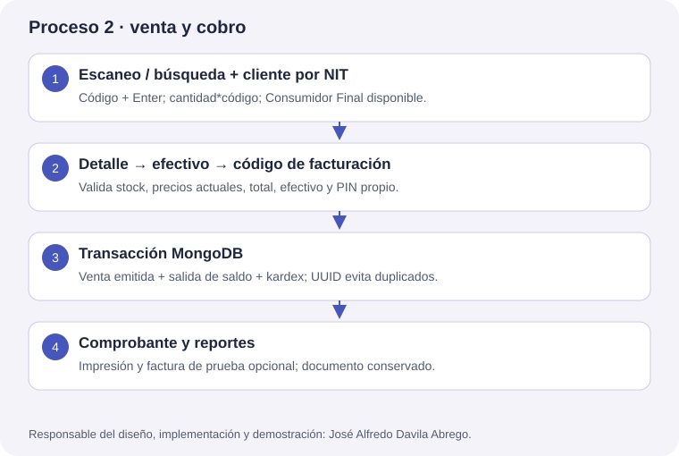
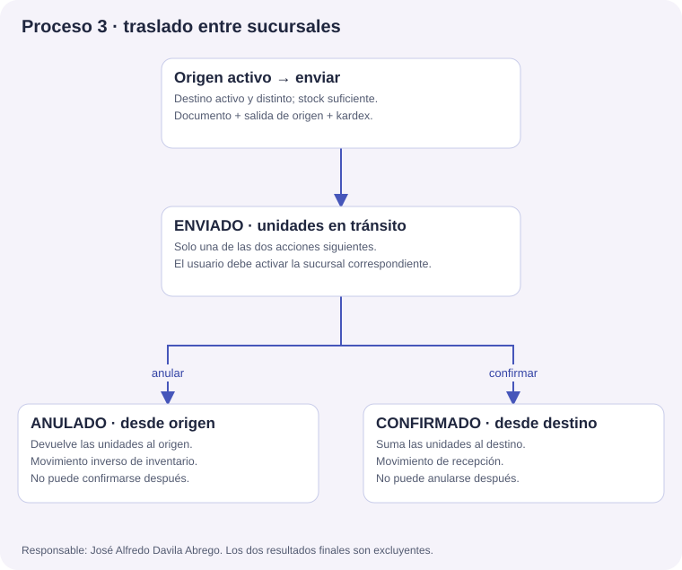

Universidad Mariano Gálvez
Centro Universitario Cuilapa, Santa Rosa
Ingeniería en sistemas de información y ciencias de la computación
Modelo conceptual, MongoDB, arquitectura y procesos integrados
Curso: Desarrollo Web
Catedrático: M.A. Ing. Elvis Morales
24 de octubre de 2026
Librería San Francisco · Stack 3

Proveedor tiene muchos productos. Un producto puede aparecer en muchos detalles de ingreso, venta o traslado. Cliente tiene muchas ventas; Consumidor Final es una opción del flujo. Sucursal participa como ubicación de stock y como origen/destino. Usuario tiene muchas sesiones y varias sucursales disponibles.
| Colección física | Contenido principal |
|---|---|
| usuarios | usuario, password hash, codigo_hash, rol, modulos, sucursal_id, sucursal_ids, activo, auth_version |
| auth_sessions | usuario_id, sucursal_id activa, token de renovación protegido, expiración y revocación |
| sucursals | Nombre físico heredado del modelo Sucursal; nombre, dirección, teléfono y estado |
| proveedores / clientes | Identificación, contactos y estado; cliente con NIT normalizado |
| productos | Código, nombre, categoría, proveedor_id, costo/venta Decimal128 y mínimo |
| existencias | producto_id + sucursal_id; cantidad del inventario de esa ubicación |
| movimientos | producto/sucursal/operación, cantidad, antes, después, fecha y actor |
| ingresos / ventas | Sucursal, proveedor/cliente, UUID, correlativo, estado y detalle embebido |
| traslados | Origen, destino, UUID, estado, detalle y actores de envío/recepción/anulación |
| contadores | Correlativos por sucursal/tipo y marca de preparación de demostración |
| cache / cache_locks | Solo al habilitar caché MongoDB: valores, límites de intentos y bloqueos con vencimiento |
Los documentos tienen _id de MongoDB; las referencias entre colecciones se guardan como string. Los detalles se embeben para conservar nombres, códigos y precios originales aunque cambie el catálogo. Los precios se representan con Decimal128 y los cálculos operativos con centavos enteros.
backend/app/Models → Repositories → Services → Http/Controllers backend/app/Http/Requests · middleware de autenticación y módulo frontend/src/views · components/<modulo> · services frontend/src/style.css · navegación por hash database/COLECCIONES_MONGODB.md · docs/postman/
El diccionario de colecciones y los índices concretos se conservan en database/COLECCIONES_MONGODB.md y las migraciones MongoDB del repositorio. No se usa una migración SQL para estas colecciones.


Validaciones: proveedor y productos activos, asociación correcta, cantidades válidas y sucursal autorizada. Resultado: ingreso registrado, incremento del saldo y movimiento auditable. Si falla una validación o la transacción, no queda una entrada parcial.

Validaciones: permisos, sucursal, stock, precios actuales, total esperado, efectivo y código personal. La interfaz retiene el UUID ante una respuesta incierta y permite recuperar la venta sin registrar otra. El borrador es de memoria: cerrar o recargar la pestaña lo pierde.

Estado inicial enviado. Confirmado y anulado son finales excluyentes. Un administrador también debe activar el destino para confirmar o el origen para anular. El mismo usuario puede realizar ambas partes alternando entre sucursales autorizadas, mientras el traslado siga enviado.